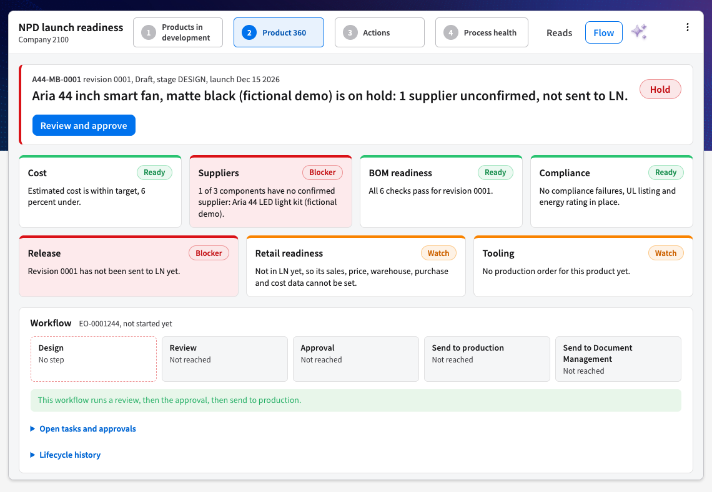
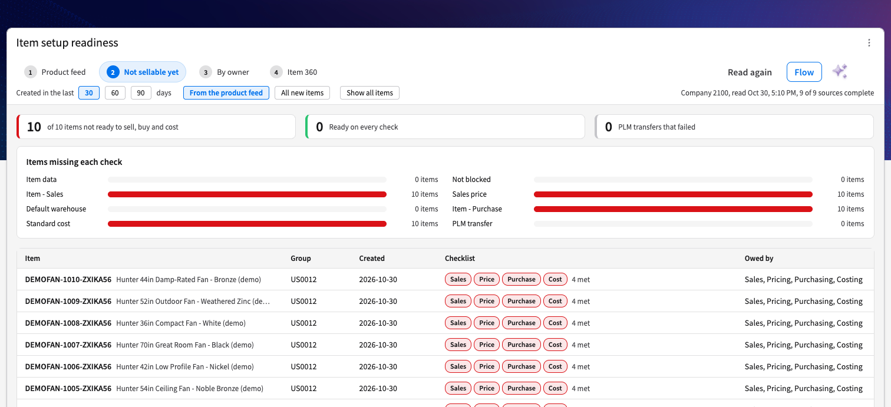
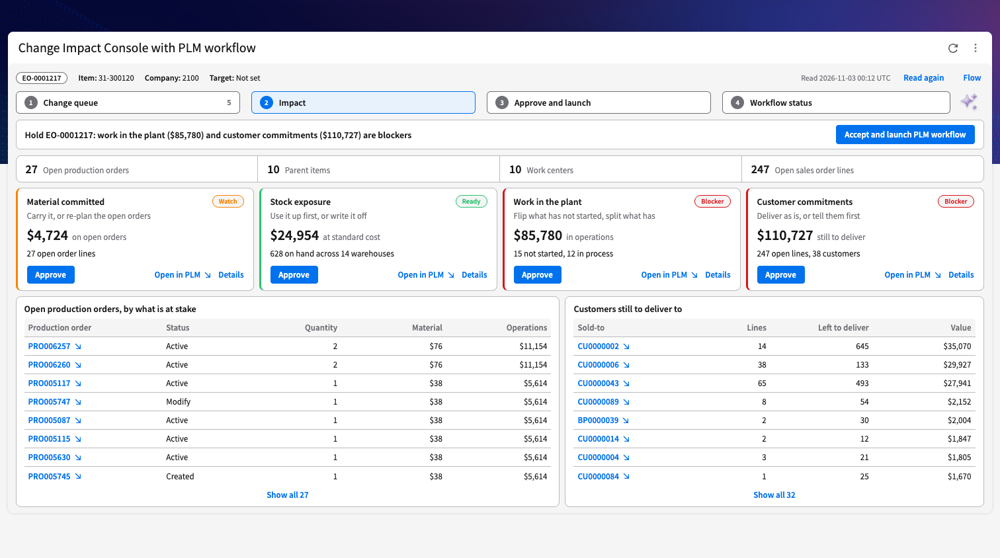
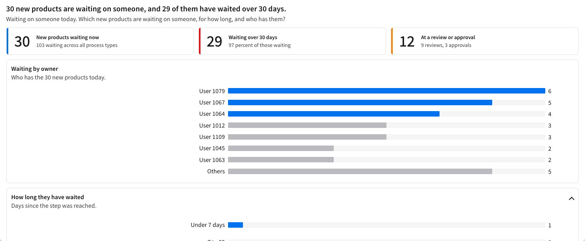
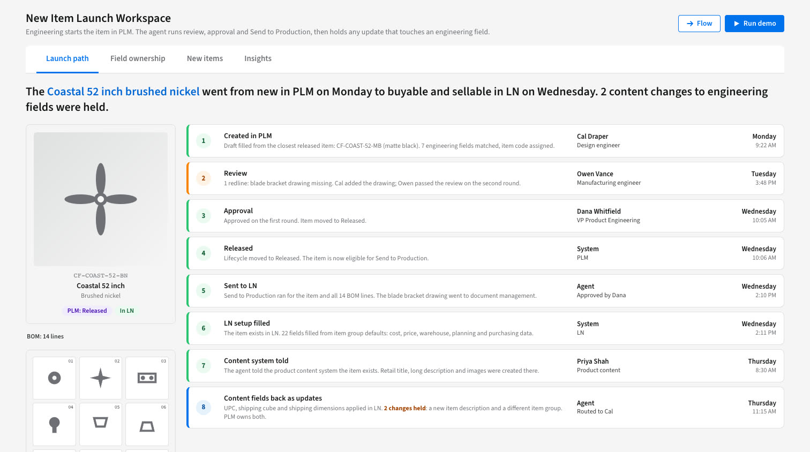
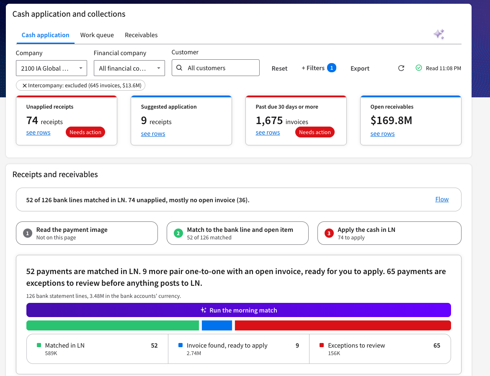
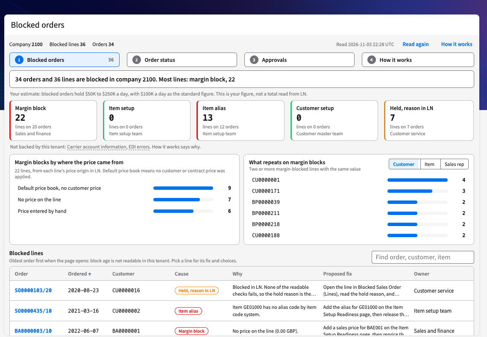
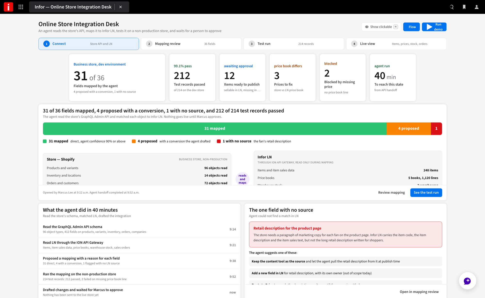
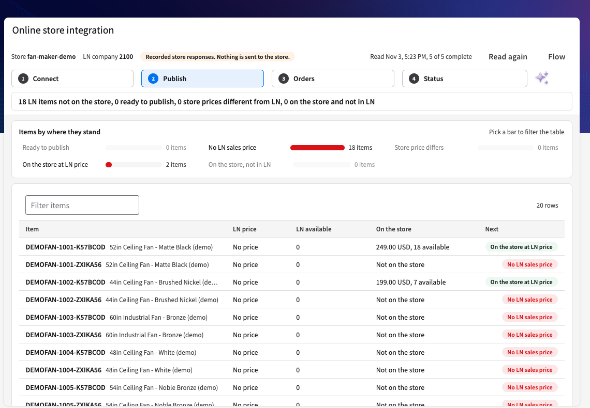
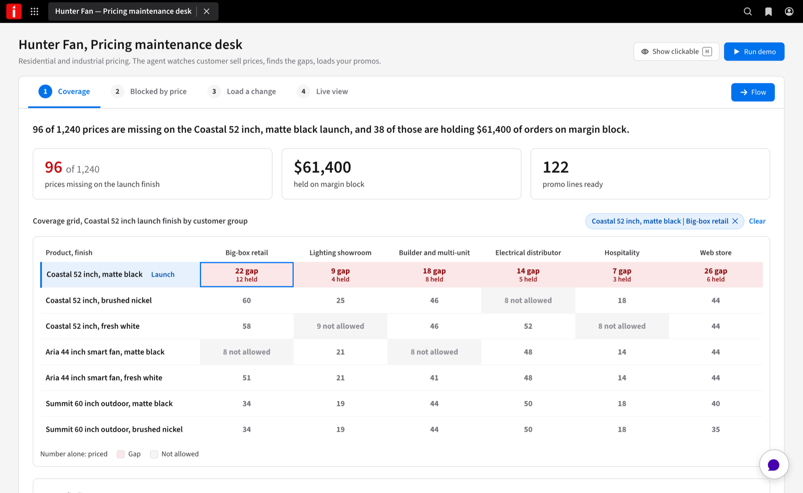

AI at Hunter Fan,
from roadmap to real
What we heard from your team, AI at Infor, your roadmap and the goal, how PLM for Discrete, LN and AI would fit together, how a use case goes from prototype to real, and the AI use cases outside PLM.
What we heard
Your 7 goals, in your words, from blocked orders to retailer content.
2AI at Infor
How agents and people work together, and how your roadmap goes through StarForge to a live page.
3Your AI vision
Your roadmap phases, what we built or are building, and the goal: all of it in FY27.
4PLM
How PLM for Discrete, LN and the AI layer would fit.
5From prototype to real
3 like-for-like examples: the prototype beside the real page.
6General AI use cases
Cash application, blocked orders, your online store, pricing and retailer content.
7What's next
What we work on together from here.
What we heard
Your 7 goals, from your AI Adoption Hub entry and what you told us this week.
Catch item, customer and price gaps at setup, not when an order blocks.
Approvals in LN, with right-sized chains.
APIs instead of flat files, so a product sells the day it is created.
You have none today, and you need them to show the board what the AI program delivered.
Your roadmap, and the goal: all of it in FY27
What we built or are building for you, in your roadmap phases.
AI at Infor
The ideas Infor shared this week, made simple and applied to Hunter Fan, and how we take your roadmap through StarForge to a live page.
Agents do the work across the business. People oversee and decide.
Built to execute, not just advise.
Turn on the GenAI Assistant and LN agents.
Process mining on order to cash.
Take repeat manual steps off your teams.
Agents work alongside customer service, pricing and engineering.
Repeat the path on the next process.
Listen
What a team writes in its AI Adoption Hub entry, and what we hear in workshops.
Match
Each ask to an AI use case, after checking what LN does today.
Tailor
Where it helps, a StarForge prototype of the standard use case, shaped by what we heard.
Build
A live page in an Infor demo tenant, on Infor demo data.
Sources: Infor agentic enterprise slides and the Infor platform slide shown this week.
From a prototype to a live page, like for like
5 examples of how we do it: the StarForge prototype tailored to you, then the live page on an Infor demo tenant. The same path applies to the rest of your roadmap.

NPD Launch Readiness
Is a new fan ready to launch?
5.2
Item Setup Readiness
The product feed creates the item. So why can’t we buy it or sell it yet?
5.3
Change Impact Workflow
What does this change cost, what stock does it touch, and who reviews it?
5.4
PLM Workspace
Who is holding it, and for how long?
5.5
PLM-first item launch
The item starts in PLM.
All 3 run on Infor demo data, not Hunter Fan data. Prototypes use fictional products, names and figures.
Next: 6 General AI use cases. Cash application, blocked orders, your online store, pricing and retailer content.NPD Launch Readiness
Is a new fan ready to launch: cost, suppliers, BOM, compliance and release?
- Your priority 2. Idea to Product, in your AI Adoption Hub entry.
- PLM for Discrete. New products would start in PLM for Discrete, once deployed, in place of today's engineering system.
Carried over: the list of products with a go or hold, the 5 checks and the next actions. Became real: items, revisions, pictures, target cost, launch date and energy rating, read from PLM on fictional products in an Infor demo tenant. Review and approve opens the PLM workflow hand-off, which has not yet run in the demo tenant.
Item Setup Readiness
The product feed creates the item in seconds. So why can't we buy it or sell it yet?
- Many hands. Several people set up each item.
- Data gets missed. The item can end up not purchasable by customers.
- 48 hours late. File schedules hold new products back.
Carried over: the feed creates items, then what each item is missing to sell, and who owns it. Became real: the checks, read from LN. Creating stays off until the owner turns it on, and the agent’s proposals are a preview.
Change Impact Workflow
What does this change cost, what stock does it touch, and who reviews it?
- Your priority 2. Idea to Product, in your AI Adoption Hub entry.
- PLM for Discrete. Engineering changes would move from today's engineering system into PLM, once deployed.
Carried over: the 4 levers in dollars and the choice each one forces. Became real: the dollars and the orders behind them, read from LN. Approve previews the PLM workflow. It has not yet run in the demo tenant.
General AI use cases
The AI use cases outside PLM that we built or are building for you.
In the demo tenant, being tailored to you
Cash application
Replace today’s tool: what matched in LN, what is unapplied, and why.
6.2Blocked orders
An estimated $50K to $250K a day, by cause, with what each order needs.
6.3Online store integration
A two-way link between LN and a Shopify development store, with fictional fans.
Prototypes
Pricing maintenance
Find the gap: this customer, this product, no price.
6.5Retailer content
About 800 attributes, with each retailer’s format mapped by hand today.
Cash application
What matched in LN, what is still unapplied, and why.
A tool reads the payment image, matches it against the bank statement and the open item in LN, then applies the cash. You want to retire that tool, not integrate with it.
A cash application page that already runs on the demo tenant.
Opens on what matched in LN and what is still unapplied, then why, then the exceptions for a person to review.

Not yet: reading the payment image. The page does not claim it. A deployed version would add it with RPA and Intelligent Document Processing.
Next: 6.2 Blocked orders.Blocked orders
Blocked orders by cause, what each one needs, and a short fixed set of choices.
Blocked orders hold an estimated $50K to $250K a day: margin, EDI, carrier account, customer setup, item cross references. When promo prices are too heavy to load, orders go on margin block instead.
The Order to Cash exception work that already runs on the demo tenant.
Prioritized before anyone opens it, like a cockpit rather than a chat.

Still to prove: how long each order has been blocked. We show it only if the data backs it.
Next: 6.3 Online store integration.Online store integration
Can we feed in the API and build the integration?
A new store for business customers and a rewrite of the consumer integration, due next September. Shopify uses GraphQL, so can we feed in the API and build the integration?
The same page kit as Item Setup, and Infor API Gateway, which can reach APIs outside Infor.
A real two-way link between LN on the demo tenant and a Shopify development store, with fictional fans: publish an item, its price and stock; a store order becomes a sales order in LN; status flows back.


Not proven yet: how much of the integration an agent can build. We show which parts an agent wrote and which a person did.
Next: 6.4 Pricing maintenance.Pricing maintenance
Would find the gap: this customer, this product, no price. Promo and price increase loads would run without a ticket and a spreadsheet.
Price gaps are found only after they block an order, and promo prices too heavy to load put orders on margin block.

Fictional products, names and figures.
Next: 6.5 Retailer content.From PLM to AI
PLM for Discrete, once deployed: an item would be born in PLM and go through review and then approval, and Send to Production would release the item and its BOM to LN. AI would sit on top of both.
Would release the item and its BOM to LN.
The item would be purchasable, built and quoted in LN and CPQ.
Sources: Infor agentic enterprise slides, the Infor PLM for Discrete User Guide (Engineering Business Process workbench; Sending an item to production) and LN: Using PLM for Discrete, GenAI PLM Workflow Assistant.
Next: 5 From prototype to real.PLM Workspace with an Assistant
What is stuck, for how long, who approved, and which group fails most?
- Your priority 2. Idea to Product, in your AI Adoption Hub entry.
- Workflow Agent. On your AI Adoption Hub roadmap.
Built straight to real: what is stuck, for how long, who has it, and which group fails most, read from PLM workflow steps and dates on Infor demo data.
PLM-first item launch
Once PLM is deployed, engineering would start the new item there. Review, approval and Send to Production would release it to LN, and each field would keep one owner.
Idea to Product is your priority 2. Many people touch one item, and data gets missed.
Would do: show the launch path, who owns each field, and new items by stage. Fictional products, names and figures.
Next: 6 General AI use cases. Cash application, blocked orders, your online store, pricing and retailer content.Retailer content
Would clean up attributes, map each retailer's format, and show a path off today's content tool, with a person approving.
About 800 attributes, with probably half in real use, and each retailer's format is mapped by hand today.
Would do: group attributes to keep, merge or retire, and review the mapping before anything goes out. Fictional products, names and figures.
Next: 7 What's next.Pick 1 or 2
Choose the use cases to build together, each with an owner from your team.
Plan PLM
What deploying PLM for Discrete would take, starting with the first product line from today's engineering system.
Build together
Working sessions on the live page, with your data rules and limits.
Same tools
Your team gets StarForge and the same tools to build its own.
A page on your Infor home page. It would see only what the signed-in user can see.
It would read LN, and PLM once deployed. A workflow launch or a load would wait for a person.
Each view would name the PLM or LN records behind it, so bad data is easy to find and fix.
It would run on the workflows you set up in PLM, and point at the exceptions.